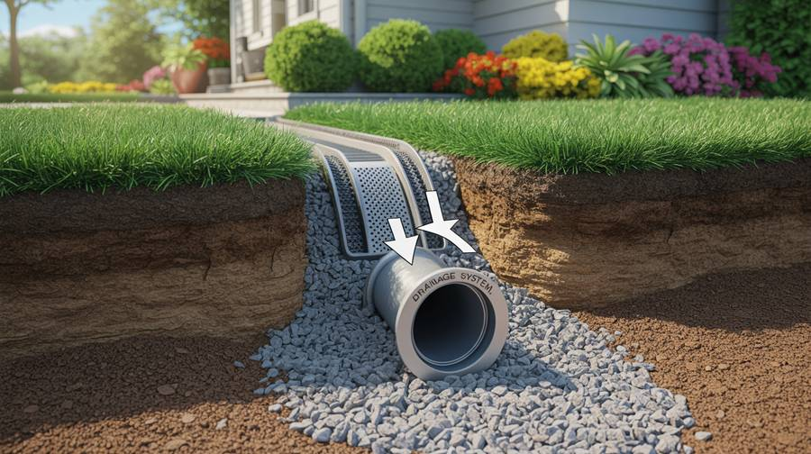
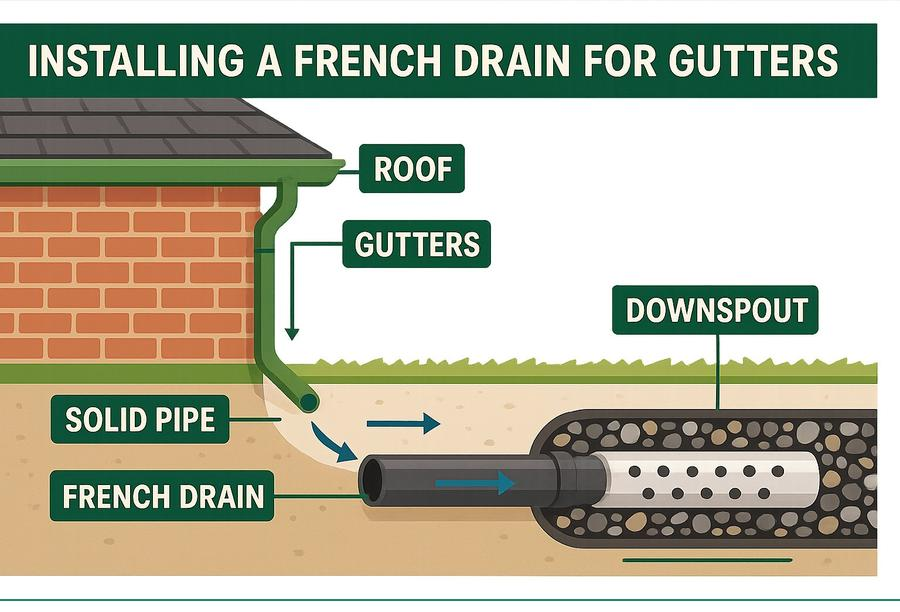
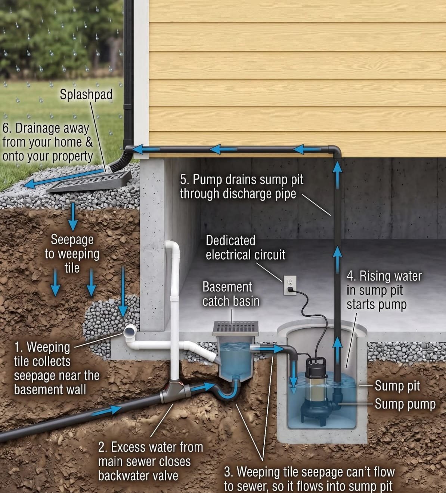
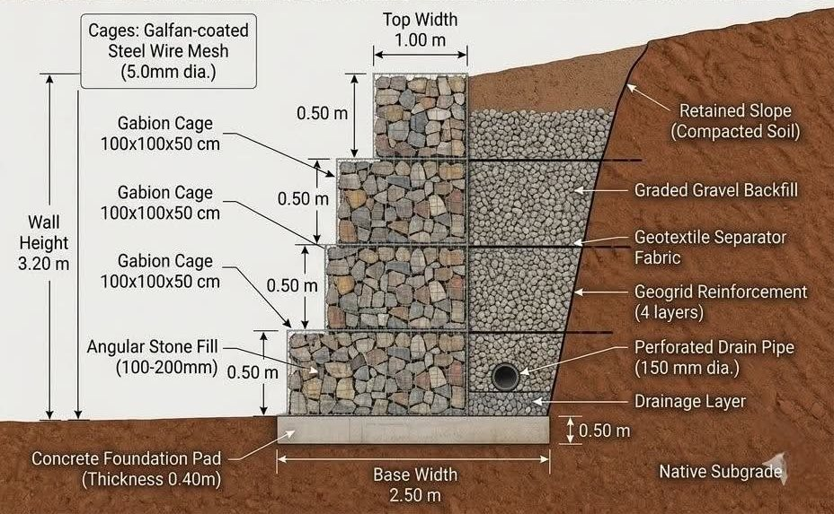
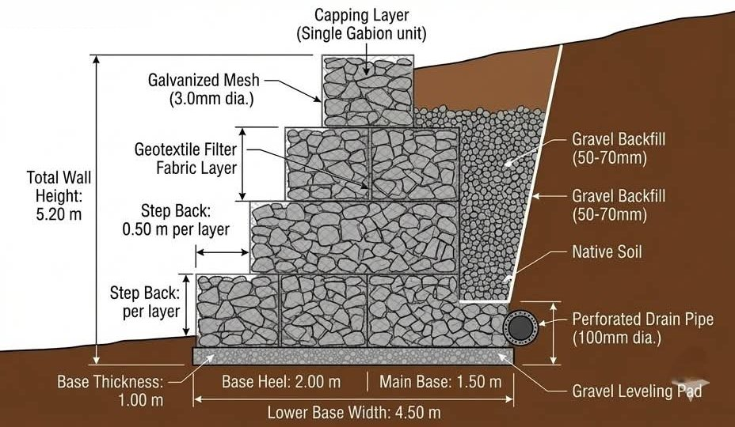
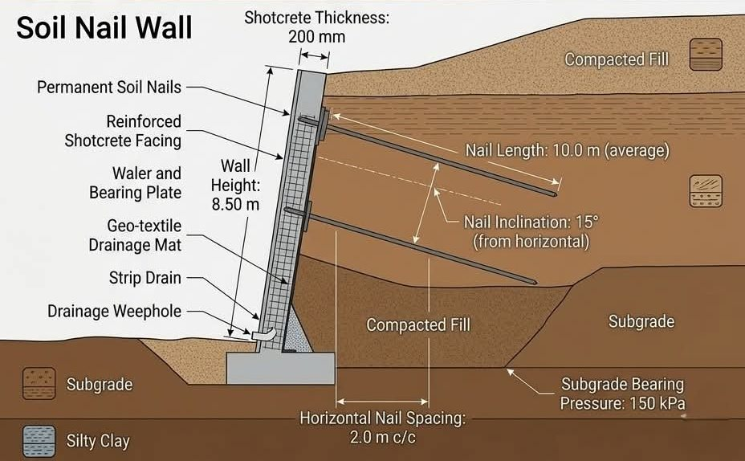
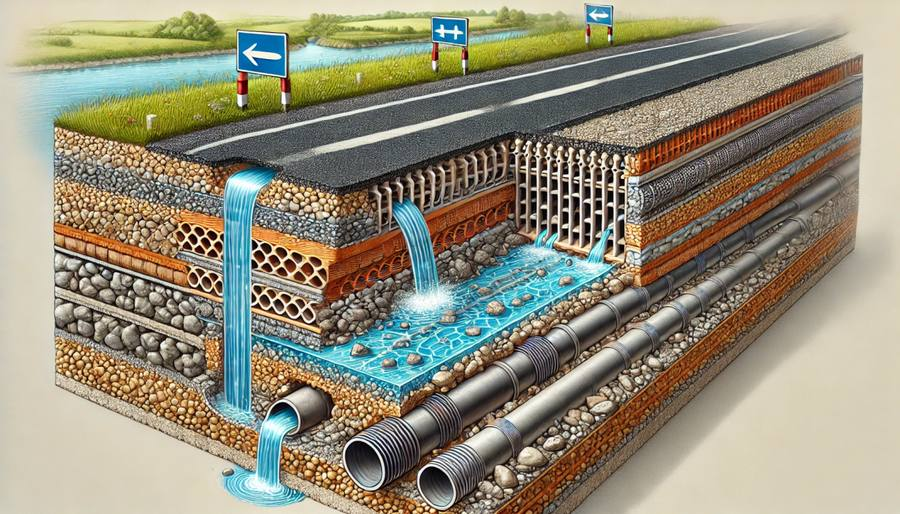
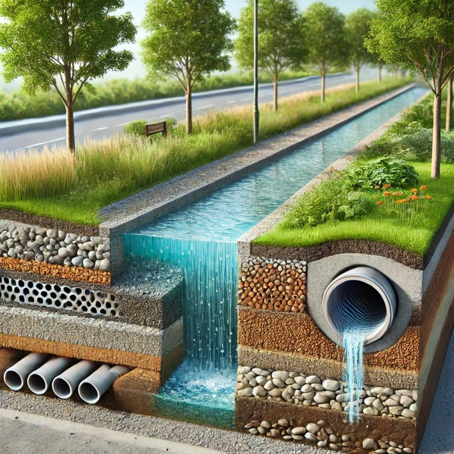

African Royal Elite Civil Group designs and builds French drain systems, retaining walls and roads. Every structure ships with its drainage specification, not as an afterthought.
Interior and exterior installation. The founding discipline behind everything else we build.
Perforated Pipe Bedded in Graded Gravel
A trench, a pipe, and a fall.
A French drain is a perforated pipe bedded in graded gravel and wrapped in filter fabric, laid to a fall that carries water away from a footing, wall or road base before it can pool or seep. It is the same discipline we build into every retaining wall and road we construct.
Cross-Section
How the water is channelled away.
Surface water and groundwater move down through the gravel envelope into the perforated pipe, which carries it to an outlet.

Water Entry Into the Gravel Envelope

French Drain Paired With Solid Pipe Outlet

Interior System: Weeping Tile to Sump Pit
Interior Installation
When the water is already at the foundation.
For basements, lower floors and structures built below the water line, we install the drain on the inside of the foundation wall and give the water somewhere to go.
01
Perimeter collection. Perforated pipe runs along the base of the foundation wall in a gravel bed, collecting seepage before it reaches the floor.
02
Sump pit. Collected water drains by gravity into a lined sump pit, kept separate from the sewer connection.
03
Automatic pump. A float-activated submersible pump on its own electrical circuit switches on as the water level rises.
04
Discharge away. Water is lifted through a discharge pipe and released onto a splash pad or into a stormwater outlet, well clear of the building.
Catalog Entries 02 + 03, Expanded
Retaining Walls
Gabion gravity walls and reinforced-concrete walls, each with a drainage zone engineered behind the face.
A wall is only as good as its drainage.
Most retaining wall failures start with water, not load. Hydrostatic pressure builds in saturated backfill and pushes the wall forward. Every wall we build has a free-draining gravel zone behind the face, a filter fabric to keep fines out, and a perforated pipe at the base that discharges to a proper outlet.
03 / Gabion Gravity Wall
Mass, permeability, flexibility.
ConstructionStepped mesh baskets, stone fill
Stone FillAngular, 100 to 200mm
FaceStepped batter per course
DrainageGravel backfill + toe drain
Best ForEmbankments, erosion, terraces
CostR1,800 / m²
02 / Cantilever RC Wall
Slim profile, high load.
ConstructionPoured RC stem + footing
ReinforcementVertical + horizontal rebar
FaceVertical, off-shutter or plastered
DrainageWeep holes, gravel, pipe
Best ForTight sites, boundary cuts
CostR4,500 / m²
Cross-Section
What sits behind the face.
Baskets step back with each course, gravel backfill carries water down, and a perforated pipe at the base takes it away.

Gabion Section: Backfill, Geogrid & Drain Pipe

Stepped Gabion: Filter Fabric & Levelling Pad
Deep Cuts
Concrete-faced walls for highway and bridge cuts.
On deep cuts next to roads and bridge abutments, a reinforced concrete face is tied back into the slope. Drainage is still the first design decision: a geotextile drainage mat behind the facing, strip drains, and weep holes at the base to release water before pressure builds.
Reinforced shotcrete or cast facing
Drainage mat + strip drains behind the face
Weep holes discharging at the toe
Highway Cut at Bridge Abutment

Section: Facing, Drainage Mat & Weephole
Catalog Entry 04, Expanded
Road Construction & Rehabilitation
New builds, widening, rehabilitation and maintenance. Every reserve carries its own drainage system.
Road Construction: Surfacing In Progress
Every road we build carries a French drain.
Water trapped in a road's sub-base is one of the leading causes of potholes, rutting and premature pavement failure. We run surface, subsurface and cross-drainage, including a French drain along the reserve, engineered in before a single layer of pavement is laid.
Dimensional Metrics: Reference Figures
R3.5Mper km, low-traffic new road
R20Mper km, high-traffic (upper range)
45 daysper km, single carriageway
400 / 100workers / vehicles per 30km
Cross-Section
Where the water goes under the road.
Surface run-off and sub-surface seepage are carried down through graded layers to perforated pipe, away from the pavement structure.

Sub-Base Drainage Layers

Surface Run-Off to Culvert
Build Sequence: Road Construction
Five stages, in this order.
00Site & Drainage AssessmentSoil, slope, catchment and existing water flow are read before the reserve is laid out.
01Sub-base & Aggregate PrepSub-base is prepared and aggregate sourced and placed to spec, coordinated with plant and materials partners.
02Integrated Drainage InstallationSurface, subsurface and cross-drainage, including French drain runs, are installed before surfacing begins.
03Paving & SurfacingSurfacing is carried out to spec, coordinated with specialist paving and binder-application partners as required.
04Compaction, Testing & Sign-offCompaction is verified, drainage function tested, and the project documented and handed over.
Specifications
What changes when drainage is engineered in, not added on.
Illustrative comparison: 50m cantilever RC wall, 3m average height (150m²).
Without Integration
R675,000
wall construction only, 150m² × R4,500/m²
No engineered outlet for backfill seepage
Hydrostatic pressure builds behind the wall
Risk of cracking, tilting or footing failure
Repair or rebuild can equal or exceed original cost
With Integration
≈ R773,000
wall + deep exterior drain, ~164ft @ ~R600/ft avg
Roughly +15% on total project cost
Continuous outlet relieves hydrostatic pressure
Protects reinforcement over the wall's design life
One contractor, one water-managed design
Reference: South Africa's full road-infrastructure replacement liability is estimated at R2.75 trillion. Drainage engineered in from day one is the lowest-cost form of asset protection, on a single wall or an entire network.
Build Sequence
Four steps, run in this order on every site.
00
Site Assessment
Soil, slope and water flow are read before anything is designed.
01
Design & Quote
Drainage is drawn in first. The structure is engineered around it.
02
Integrated Installation
One crew, one schedule, no coordination gap between trades.
03
Handover & Warranty
Signed off, documented, backed by a written workmanship warranty.
Technical Reference
Four structures, drawn the way we build them.
Reference diagrams, one per catalog entry, matching the specifications quoted above. Click any drawing to enlarge.